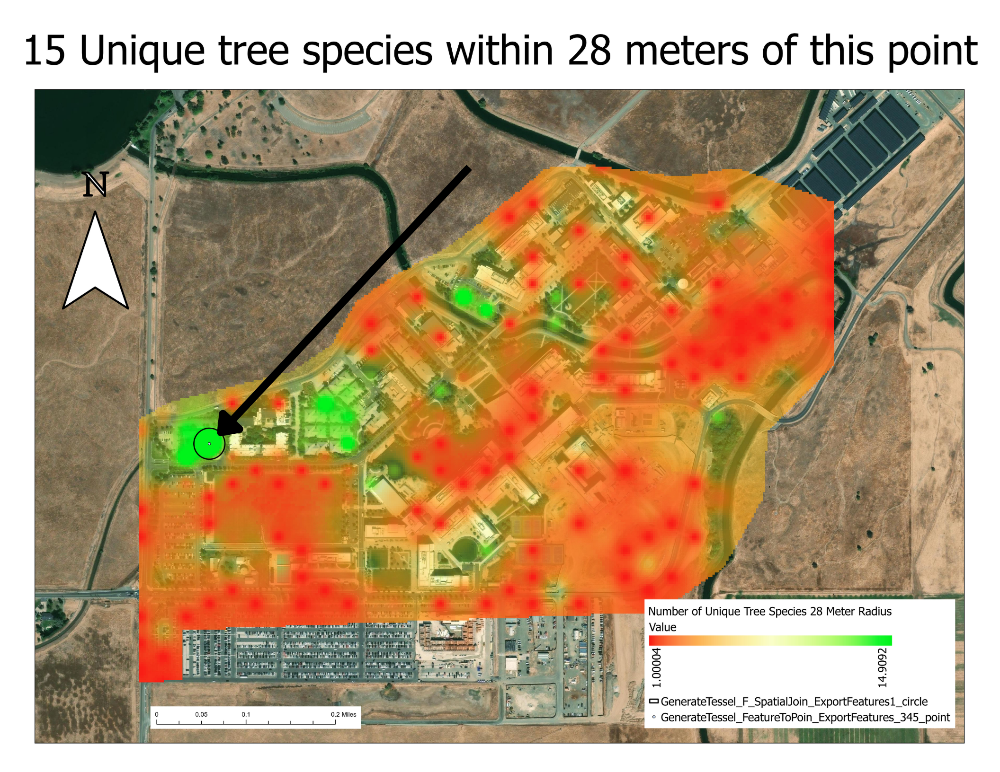

Upcoming · October 24, 2026
Build an Interactive Campus Map with JavaScript.
Join HacktoberFest HackDay and turn 2,131 tree records into an interactive UC Merced map. Then add a campus location of your own.
